Skylineでは、イオントラップやOrbitrap、Q-TOFといったフルスキャンが可能な質量分析計の生データファイルから、クロマトグラフィーに基づく定量測定を抽出する複数の方法をサポートしています。Skylineは、質量分析計ベンダーである主要6社（Agilent、Bruker、SCIEX、島津製作所、Thermo-Scientific、Water）の装置の分析メソッドをサポートしており、高分解能分析でも低分解能分析でも十分に対応可能なアプローチ方法を採用しています。
本チュートリアルではSkylineを使用して、並列反応モニタリング（PRM）と呼ばれるターゲットアプローチで取得したMS/MSスペクトルを分析する方法を習得します。この方法はpseudo-SRMやMRM-HR™とも呼ばれます。これらの別名が示唆するとおり、PRMはSkylineが使用し始めた三連四重極質量分析計でのSRMに最も類似しているフルスキャンメソッドです。
SRMがプリカーサーイオンとプロダクトイオンの複数のペアをスキャンして、経時的にサイクル内のそれぞれに対する単一強度の測定を収集していくのに対し、PRMはプリカーサーイオンのデータ非依存リストをスキャンして、経時的にサイクル内のそれぞれに対するすべてのMS/MSスペクトルを収集していきます。

Skylineにより、この分析法で取得されたフルスキャンデータから時間強度クロマトグラムが抽出されます。
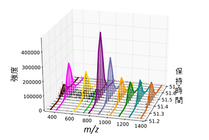
結果として抽出されたクロマトグラムは、今ではすっかり慣れ親しまれているSkylineのユー
ザーインターフェイスで、三連四重極質量分析計から得られたSRMデータに類似した定量的
データを提供します。

PRMは、三連四重極質量分析計で時間がないときに代替法として使用できます。一方で、高分解能MS/MSでのフィルタリングは、従来のSRMよりも選択性に優れていることがあり、収集されたスキャンデータをペプチド検索で処理すると積分されたクロマトグラムのピークを検証できます。またPRMは、主にペプチドスペクトルマッチングパイプラインのためのMS/MSスペクトルのdata dependent acquisition（DDA）に利用されていますが、様々なフルスキャン型装置でのシステム適合性試験にも使用できます。ただし、IDを使用しない品質管理方法については、別のチュートリアルで説明します。本チュートリアルでは、低分解能Thermo LTQおよび高分解能Agilent Q-TOFにおけるターゲット定量分析を目的としたPRMの使用について説明していきます。
本チュートリアルを始める前に、次のzipファイルをダウンロードしてください。
https://skyline.ms/tutorials/TargetedMSMS_2.zip
この中のファイルを、次のようにコンピュータ上のフォルダで解凍します。
C:\Users\brendanx\Documents
これにより次の新しいフォルダが作成されます。
C:\Users\brendanx\Documents\TargetedMSMS
このフォルダには本チュートリアルに必要なすべてのファイルが含まれています。Windows Explorerで新しい「TargetedMSMS」フォルダに移動し、さらに「Low Res」というサブフォルダに移動します。低分解能Thermo LTQのPRMデータの分析に使用するSkylineプロジェクトを開くには、「BSA_Protea_label_free_meth3.sky」ファイルをダブルクリックします。
ドキュメント内の最初のペプチドを選択すると、Skylineは以下のようになります。

これは比較的小さなドキュメントです。ステータスバー上の右下隅にあるインジケーターには、合計78個のプロダクトイオンまたはターゲットトランジションを有する10個のペプチドのプリカーサーイオンが含まれていることが示されています。このプリカーサーイオンの中には、ウシ血清アルブミン（BSA）について公開されているNSTライブラリのMS/MSライブラリスペクトルと関連付けられているものもあります。また、他の2つのペプチド（ヒトとウシと1つずつ）ではMS/MSライブラリスペクトルにはない非修飾体とリン酸化修飾体として観測されています。
Skyline内でこういったSkylineドキュメントを作成することに慣れていない場合には、入門チュートリアルおよび取扱説明ビデオなどでSkylineのメソッド編集機能などを取り上げています。本チュートリアルでは、ターゲットプロテオミクスメソッドの編集をSkylineですることに慣れているのを前提として、既存のSkylineドキュメントから説明を始めていきます。
Windows Explorerで、このSkylineドキュメントが入っていたのと同じ「Low
Res」フォルダに
2つのThermo生ファイルがあるのを確認します。これらのファイルには、下記のメソッドを
使った上述のPRMアプローチで、低分解能のLTQ装置で取得した一連のMS1およびMS/MSスペクトルが含まれています。
Skylineでは、Thermo-Scientific、Bruker、およびSCIEXの装置用にこのようなPRMメソッドをエクスポートすることが可能です。AgilentおよびWatersの装置やThermo Q Exactiveの場合は、SkylineがSRMトランジションリストのPRM版のような単離リストをエクスポートできます。フルスキャン装置用のメソッドをエクスポートする前に、まずフルスキャンデータ分析用のドキュメントを設定しておく必要があります。
現在のドキュメントを本チュートリアルで提供されているThermoの生ファイルの分析用に
設定するには、以下の手順を実施します。
本ドキュメントは、まだフルスキャンデータからのクロマトグラム抽出用に設定されていません。このままでもSRMデータを問題なく分析できますが、フルスキャンデータのファイルをインポートするには、少し設定変更が必要です。[ フルスキャン] タブは以下のようになります。

フルスキャンデータからクロマトグラムを抽出するには、Skylineにさらに情報を入力する必要があります。
[ フルスキャン] タブは以下のようになります。

MS1とMS/MSフィルタの両方が有効化されている場合、すべてのプリカーサーイオンのクロマトグラムはMS1スペクトルからのみ抽出され、すべてのフラグメントイオンのクロマトグラムはMS/MSスペクトルからのみ抽出されます。MS/MSスキャン内でプリカーサーイオンがどのように表示されるかを見るには、MS1フィルタが無効になっているドキュメントを使用する必要があります。
Skylineでは、デフォルトで [ 保持時間のフィルタ ] の設定が [ 予測された保持時間（分）のスキャンのみを使用します ] となっていますが、この設定は赤でハイライト表示されています。赤字のテキストにマウスカーソルを合わせると、「このドキュメントのスペクトルライブラリには、このドキュメント内のペプチドの保持時間情報が含まれていません。 」というヒントが表示されます。この設定はクロマトグラムを抽出する時間範囲を狭めるためのものですが、関連する保持時間を持つMS/MS IDがないため、スペクトルライブラリの設定を変更しない限り、Skylineは一致するすべてのMS/MSスペクトルからクロマトグラムを抽出しなければならなくなるということを警告しています。ただし、本実験では、ターゲットMS/MSスペクトルの検索に由来するペプチドデータをインポートします。以下の操作を行って、クロマトグラムの抽出範囲をもう少し狭めます。
これによってSkylineのファイルサイズが大幅に縮小し、インポート時間が加速してクロマトグラムのピーク選択を改善できます。
MS/MSライブラリのスペクトルとのマッチングが、Skylineが抽出するクロマトグラムに正しく対応するようにするには、フルスキャン設定のMS/MS分解能がライブラリのイオン許容誤差と一致するかを確認する必要があります。このデータセットについては、以下の手順を実施します。
[ ライブラリ ] タブは以下のようになります。

これでライブラリイオン一致ウィンドウはクロマトグラム抽出ウィンドウと同じになります。クロマトグラム抽出ウィンドウはm/zで変化するため、高分解能データではこれがもう少し複雑になることがあります。今後はチェックボックスを追加してこれら2つの設定を一致させていくことを検討中ですが、現時点では0.05～0.01の間の値が高分解能データに最も適しています（MS/MS質量アナライザーの分解能設定による）。
MS1フルスキャン設定は、モノアイソトピックのプリカーサーピークを結果ファイルのMS1スキャンから抽出することを示しているため、ドキュメント内ではそのプリカーサーイオンのトランジションが含まれていることを確認するとよいでしょう。Skylineは [ フィルタ ] タブの [ イオンタイプ ]フィールドですでに「p」（プリカーサーを意味する）を追加していますが、念のため確認します。
[ フィルタ ] タブは以下のようになります。

各ペプチドプリカーサー項目にプリカーサートランジションが含まれていることを確認するには、以下の操作を行います。
残念ながら、本ドキュメントではすべてのプリカーサーが手動で編集されているため、Skylineは [ フィルタ ] タブの変更に応じたトランジションの変更をしません。そこで、以下のようにプリカーサートランジションを手動で追加する必要があります。
フォームは以下のようになります。

ドキュメント内のその他の9つのプリカーサーそれぞれについてこの手順を繰り返します。
これらの変更が完了したら、最初のペプチドを再度選択します。
これでドキュメントは、PRMデータで作業できるよう設定されました。また、これを使用してLTQ装置のPRMメソッドをエクスポートすることもできます。
Skylineドキュメントからのメソッドのエクスポートは、そのメソッドを実行する装置制御用コンピュータで行うのが最適です。何故かというと、ほとんどの装置ベンダーがメソッド編集ソフトウェアの設計時点で、その他の設定がされている状態でもソフトウェアが動作するように考慮していないからです。Skylineはこれらのベンダーのライブラリを使用しなければならず、このために使用予定のテンプレートメソッドを変更する必要があります。一部のケースでは、個人コンピュータ上でベンダーソフトウェアを装置制御コンピュータ環境と同じように設定することも可能ですが、推奨はしません。Skylineドキュメントはご利用の個人コンピュータで編集し、その後で装置制御用コンピュータに転送して最終的なメソッドのエクスポートを行う方がよいでしょう。
したがって、現在のドキュメント用のThermo LTQメソッドをエクスポートするには、まずThermo LTQ用の装置制御コンピュータにドキュメントを転送し、その後以下の手順を実施します。
[ メソッドをエクスポート ] フォームは以下のようになります。

実際にこの手順をThermo LTQ上で行った場合、この操作で指定した新しい「TargetedMSMS_BSA_Protea.meth」ファイルが作成されます。当該ファイルをダブルクリックすると、その後、LTQ装置の設定ソフト上では以下のような画面が表示されます。
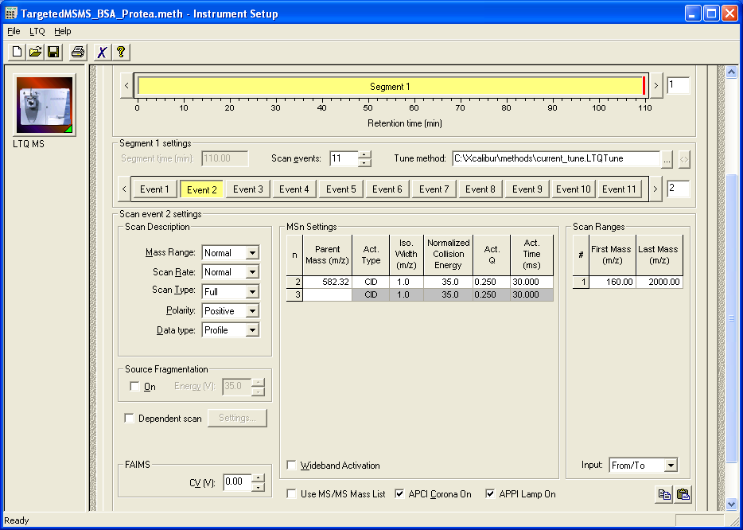
または、Skylineによって以下のエラーメッセージが表示されます。

[ OK ] ボタンをクリックしてチュートリアルの残りの操作を続けます。Thermo Ion Trap and Fusion、Bruker QTOFおよびSCIEX QTOFの装置制御用コンピュータでも同様の手順が動作します。 [ ファイル ] > [ エクスポート ] > [ Agilent TOFおよびThermo Q Exactive装置の単離リスト ] からも行えます。
このような小さなドキュメントでは、ドキュメント内の特定のプリカーサーm/z値についてMS1スキャンを1回およびMS/MSスキャンを10回設定する必要があるだけなので、上記のようなメソッドを手動で作成できます。この目的のためのプリカーサーm/zを含むレポート作成には、以下の手順を実施します。
[ レポートを編集 ] フォームは以下のようになります。

[ レポートをプレビュー ] フォームは以下のようになります。
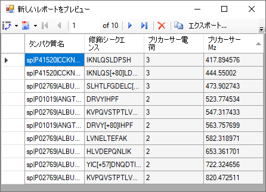
このフォームにはプリカーサーm/zが表示されており、現在、直接メソッドエクスポートをサポートしていない装置であっても、このドキュメントのPRMメソッドの設定に時間はかからないはずです。実際に、これから調べようとしているデータの元のメソッドはこの方法で作成されています。多くのPRM実験は、Skylineにおいてもスケジューリングアルゴリズムが急速に重要となったSRMと同様、スケジュール化されたデータ取得に依存するようになってきていることに注意してください。
本ドキュメント用のペプチド検索結果とThermo LTQで収集した2つの生データファイルの両方をインポートするには、以下の手順を実施します。
Skylineには以下のようなウィザードが表示されます。
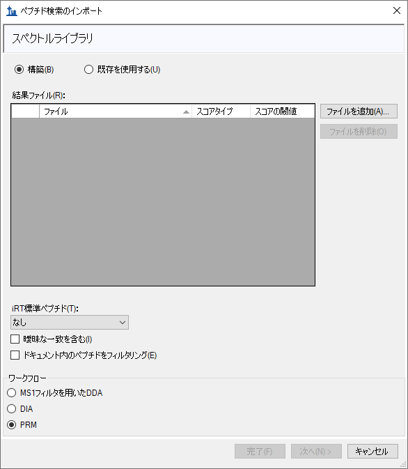
このフォームの最初のページは、Skylineドキュメントのスペクトルライブラリの構築に使用可能です。これを行うには、以下の手順を実施します。
フォームは以下のようになります。

Skylineは本実験用のPRMデータで実行されたSequest/Percolatorペプチド検索の結果からスペクトルライブラリを構築し始め、同時に進行状況フォームを表示します。このステップを完了すると、Skylineはペプチド検索スペクトルソースファイルまたはSkylineドキュメントに生データファイルがないか検索します。
ここでは、一致するThermoの生ファイルが2つ見つかります。
一致するデータファイルが見つからなかった場合は、ファイルを検索するよう求められます。
ウィザードフォームは以下のようになり、Skylineがクロマトグラム抽出に使用するファイルが表示されます。

Skylineはこれらの長いファイル名に共通のプレフィックスやサフィックスがあることを検知し、それを削除するように提案して以下のようなフォームを表示します。

Skylineはこのような繰り返し測定名をグラフラベルやその他のUI要素で表示するため、このように短い名前にしてしまう方が良いでしょう。ここでは短くなった名前で続けます。
Skylineはすでに調整された複数のトランジション設定を表示します。これらの設定は、MS1フルスキャンフィルタチュートリアルのように白紙状態から始めるときに有用となりますが、
ここでは変更する必要はありません。
これでSkylineにフルスキャン設定が表示されるようになります。ここでもこのデータセットに対してはすでに調整が済んでいます。
ファイルのインポートが開始され、Skylineウィンドウおよび [ クロマトグラムの読み込み ]
フォームの下部にあるステータスバーに進行状況が表示されます。

ターゲットクロマトグラムがピークから抽出・分析されている間に、以下の操作を行って抽出されたクロマトグラムの表示を準備できます。
インポートが完了すると、Skylineウィンドウは以下のようになります。
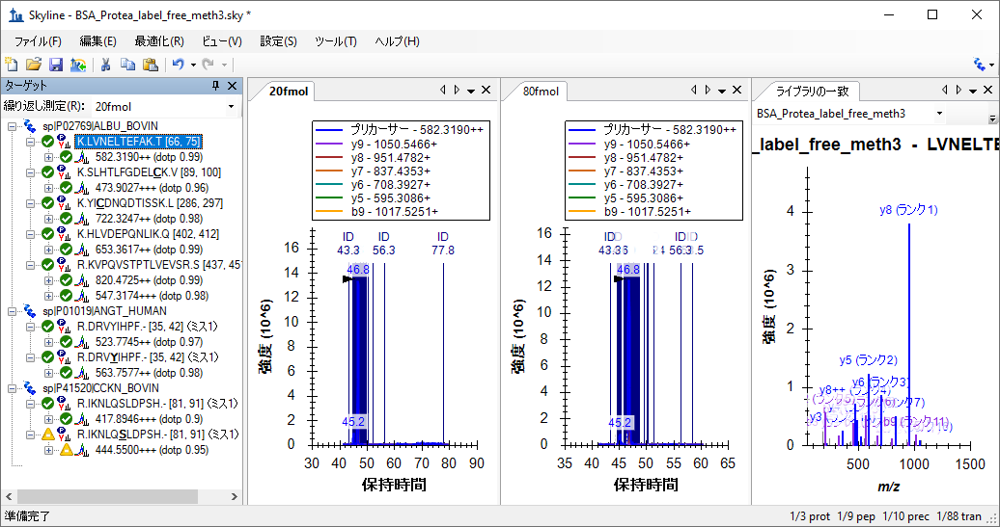
この表示には濃い青の縦線、「ID」の文字および同定されたスペクトルの分単位の時間が注釈付けられたスペクトルIDが多数あるため、クロマトグラムを確認しづらいことがあります。選択したクロマトグラムピークが、その頂点を示す黒の矢印ポインタ付きで、これらのIDの
真ん中に表示されます。
ここでクロマトグラムのピーク強度（1.4 x 107）が、4:1で希釈したものよりもかなり似ているということに気付かれるかもしれません。これは、ドキュメント内のその他の2つのタンパク質の希釈において、BSAタンパク質断片概要を常在するバックグラウンド物質として使用したためです。
Skylineでこのフルクロマトグラム表示が表示されている場合は、以下の操作を行ってクロマトグラムの積分ピークにズームインします。
クロマトグラムグラフは以下のようになります。

これでターゲットペプチドとして同定されたスペクトルの個々の線が見えるようになりました。よく見てみると、20fmol試料のクロマトグラムピークの真ん中に赤い線が見えます。これは、[ ライブラリの一致 ] 表示で現在示されているスペクトルであり、BiblioSpecライブラリ構築ツールが「最良スペクトル」として選択したものです。クロマトグラムプロット内の線をクリックするか、[ ライブラリの一致 ] 表示の上部にあるドロップダウンリストをクリックしてスペクトル時間のリストから選択すると、[ ライブラリの一致 ] 表示にある他のスペクトルも見ることができます。ペプチド検索エンジンが、明確なクロマトグラムピークからこの存在量のペプチドを含むスペクトルとしてここまで同定できることに少し驚かれるかもしれません。ピーク積分境界外のスペクトルを見てみると、シグナルノイズ比が非常に低いことがわかります。

それでもなお、すべてのUniprot FASTAを反転させた後、3つの予想タンパク質を含むFASTAファイルに対して未指定開裂での検索が行われました。
また、ペプチドIDの注釈が多すぎるとクロマトグラムを確認しづらいことがあるため、以下の操作を行います。
[ ターゲット ] 表示に注目してみると、すべてのターゲットペプチドに一致するMS/MSスペクトルがあり、小さなスペクトル付きのアイコン  が右下隅に表示されます。ここでは最低内積スコア（「dotp」という標識）が0.84であることがわかります。 これにより、プリカーサー「417.8946+++ (dotp
0.84)」に対する観測されたプロダクトイオンピーク面積とライブラリスペクトル内のフラグメントイオン強度間の相関度スコアが出ます。[ ターゲット ]
表示には有効な繰り返し測定である「20fmol」の内積スコアのみが表示されています。有効な繰り返し測定は、タブテキストが太字になっており、[ターゲット]
表示上部のドロップリスト内で選択されていることからわかります。「80fmol」繰り返し測定の内積スコアは、そのクロマトグラムをクリックするか、ドロップリスト内で選択すると見ることができます。
が右下隅に表示されます。ここでは最低内積スコア（「dotp」という標識）が0.84であることがわかります。 これにより、プリカーサー「417.8946+++ (dotp
0.84)」に対する観測されたプロダクトイオンピーク面積とライブラリスペクトル内のフラグメントイオン強度間の相関度スコアが出ます。[ ターゲット ]
表示には有効な繰り返し測定である「20fmol」の内積スコアのみが表示されています。有効な繰り返し測定は、タブテキストが太字になっており、[ターゲット]
表示上部のドロップリスト内で選択されていることからわかります。「80fmol」繰り返し測定の内積スコアは、そのクロマトグラムをクリックするか、ドロップリスト内で選択すると見ることができます。
すべての繰り返し測定について同時にこの情報を再確認するには、以下の操作を行います。
[ ピーク面積 ] グラフは以下のようになります。
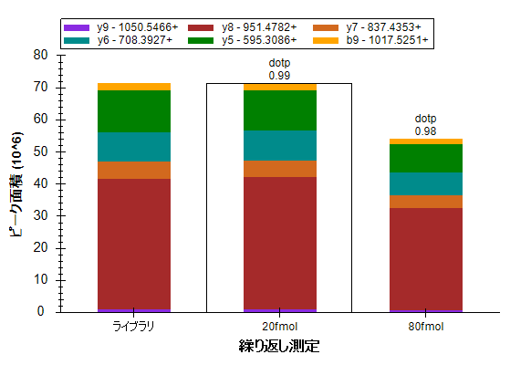
そのように表示されない場合は、以下の手順のうち複数を実施する必要があります。
これらの設定を有するすべてのターゲットペプチドを確認すると、すべてが検索スペクトルに良好に一致していること、およびBSAペプチドの濃度がこれらの試料間で比較的安定していることがわかります。BSAペプチドの一部は20 fmolの試料でより高いピーク面積を示しており、80 fmolの試料に対して高くなっているものもありますが、これは単に測定値のばらつきによるものです。全5ポイント希釈曲線については、上記LVNELTEFAKペプチドのピーク面積グラフは以下のようになります。
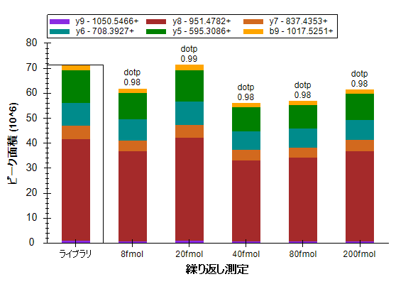
次に、ヒトペプチドDRVYIHPFに注目してみましょう。 ここでは、試料名80 fmolおよび
20 fmolで4:1の濃度比が見られると予測されます。Skylineが実際に行った測定値の詳細を見るには、以下の操作を行います。
[ ピーク面積 ] グラフは以下のようになります。
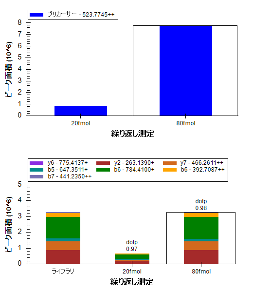
80 fmolプロダクトイオンは合計約3 x 106、および20 fmolプロダクトイオンは合計約0.7 x 106となります。 これは予測された4:1の比率からかけ離れているというわけではありませんが、MS1スキャンから抽出されたプリカーサーイオンは、80 fmolの面積が約8 x 106、20 fmolの面積がほぼ0.9 x 106、9:1の比率となっています。この相違の原因を見つけるためにクロマトグラムに注目してみましょう。
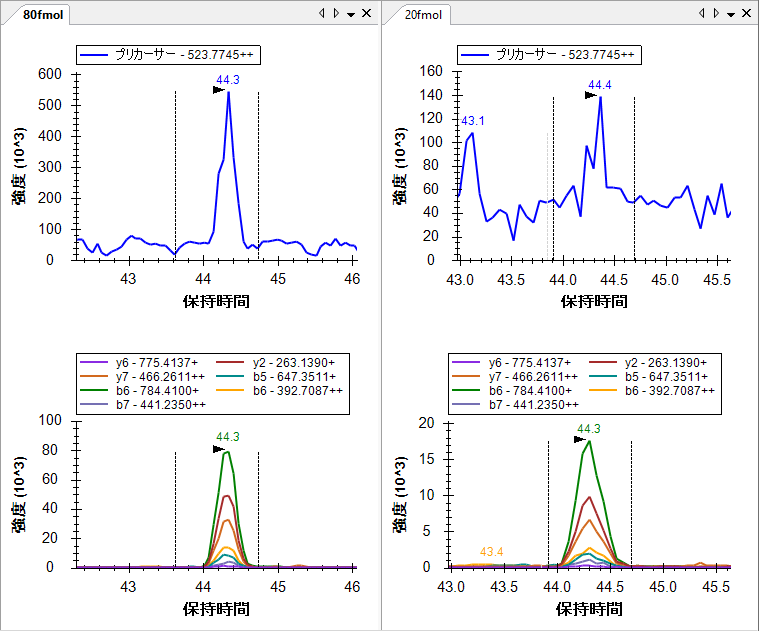
プロダクトイオンクロマトグラムのノイズは、MS1から抽出したクロマトグラムと比較してかなり少ないということがわかります。Skylineによってバックグラウンドが差し引かれると、
バックグラウンドを超える20
fmolのプリカーサー面積はかなり小さくなります。MS/MSからのプロダクトイオンクロマトグラムは、同一分解能でのMS1からのプリカーサークロマトグラムよりも選択的であり、プロダクトイオンクロマトグラムのバックグラウンドはかなり小さくなっています。
ここで、ドキュメント内の最後の4つのペプチドをすべて確認すると、4つのペプチドすべてが80 fmolの試料と20 fmolの試料との間で、予想どおり約4:1の強度比を示していることもわかります。（このデータは希釈系列から2ポイントを選んだものです。本チュートリアルではサイズを考慮して、2ポイントのみで行っています。）
これらのデータおよびその他の実験は、低分解能LTQがMS/MSスペクトルから抽出されたフラグメントイオンクロマトグラムを使用した定量実験の実施に十分な装置であることを示しています。1
また以下の操作を行うことで、繰り返し測定間の相対イオン存在量の比較もできます。
このモードでは、ドキュメント内のすべてのペプチドを再確認して、フラグメントイオンの相対存在量が繰り返し測定間で類似すること、またライブラリスペクトルのフラグメントイオン強度に類似することがわかります。
R.IKNLQSLDPSH.- [80, 90]
|
K.HLVDEPQNLIK.Q [401, 411] 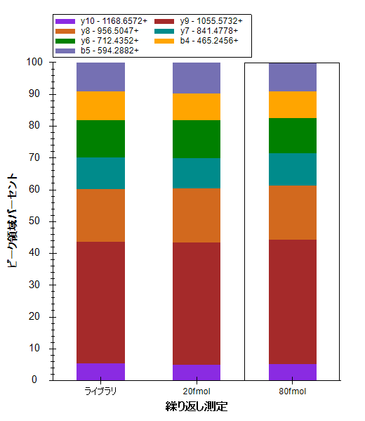 |
本チュートリアルに含まれているその他のデータセットは、BSAペプチド断片を使った希釈系列データで、Agilent 6500 Series Q-TOFで測定しています。このデータを本チュートリアルでダウンロードできる小さいサイズに収めるため、Skylineフルスキャンフィルタはスペクトルをプロファイル表示にして動作しますが、高分解能スペクトル内のすべてのスペクトルピークはセントロイド化されています。Skylineではベンダーのセントロイド化されたスペクトルでかなりうまく動作することがわかったので、現在はプロファイルスペクトルが利用可能なときでもセントロイド化されたスペクトルの使用を強制するオプションがあります。
このQ-TOFデータで作業を開始するには、今開いているファイルを保存し、作成済みの
チュートリアルフォルダの「TOF」サブフォルダにある「BSA_Agilent.sky」ファイルを開きます。
繰り返しになりますが、これは「TOF」フォルダ内の生データファイルにより測定された実験の全Skylineドキュメントであり、その設定では現在SRMデータしかインポートできません。この時点で、このチュートリアルに含まれているTOF質量分析計データファイルをインポートしようとすると、以下のエラーメッセージが表示されます。

実際にこれを行った場合、以下の操作を行ってドキュメントを元の状態に戻します。
以下の操作を行うと、ドキュメント設定を調整し、チュートリアルデータファイルに取り込まれたPRM実験と互換性を持たせることができます。
[ フルスキャン ] タブは以下のようになります。
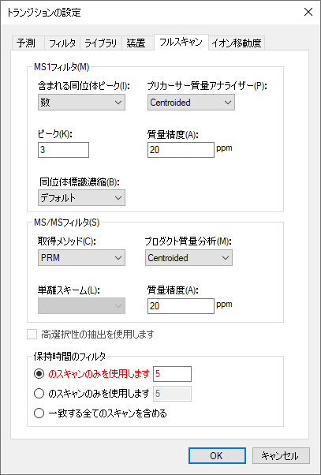
このデータセットでは、MS/MS IDを取得するようなペプチド検索結果がありません。そのためこのオプションは赤字になっています。データのインポート前にペプチドが溶出する保持時間を予測する方法もありません。設定をこのままにしておくと、Skylineは一致するスキャンすべてから抽出を行います。これはMS/MS IDの情報が欠けているからです。以下の操作を行えばこれを明確に選択することもできます。
Skylineではこのオプションが赤で表示され、マウスカーソルを赤いテキストの上に合わせると、「全グラジエントクロマトグラムのインポートには時間がかかり、ディスク容量を消費する上、ピークの選択が効果的に行えない場合があります。」というヒントが表示されます。ただしこの場合、データはスケジュール化されたPRMメソッドで取得されており、MS1スペクトルが全グラジエントで取得されたにもかかわらず、Skylineではクロマトグラムの長さをMS/MSスペクトルが取得された時間範囲で自動的に調整します。
各ペプチドプリカーサー項目にプリカーサートランジションが含まれるようにするには、以下の操作を行います。
この場合には、すべてのペプチドが3つのプリカーサートランジション（M、M+1、およびM+2）を含んでいることがわかります。 そしてこれは高分解能MS1スキャンでのみ可能です。
[ ターゲット ] 表示のトランジションは以下のようになります。
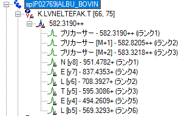
プリカーサートランジションが自動的に追加されます。これはどのペプチドも手動で編集されておらず、自動選択モードのままになっているからです。ここでも、Skylineは [ フィルタ ] タブで自動的に「p」イオンタイプを追加しました。これはMS1フィルタが選択されたためです。
また、SkylineはOrthogonalランキングを利用して、プリカーサー同位体ピーク（iランク）およびプロダクトイオンピーク（rank）をランク付けしていることがわかります。プリカーサー同位体ピークは、予測同位体分布に従ってランク付けされます。一方プロダクトイオンピークは、一致するライブラリスペクトルでの相対強度により個別にランク付けされます。
希釈系列の最高濃度での測定をドキュメントにインポートするには、以下の手順を実施します。
ターゲットクロマトグラムの抽出とピークが分析されている間、以下の操作を行って抽出されたクロマトグラムの表示を準備できます。
インポートが完了すると、Skylineウィンドウは以下のようになります。

まず、グラフ内のクロマトグラムは3分の範囲のみ表示していることに注意します。上図では12分から15分です。
[ ターゲット ] 表示を拡大すると、プリカーサー同位体分布およびプロダクトイオン強度に新たに2つの直交内積値である、idotpおよびdotpがそれぞれ追加されているのがわかります。最高濃度のデータである500 fmolの場合、これらの値はクロマトグラムピークと予測相対強度との間の非常に良好な相関度があることを示しています。

すべてグラフにおいて選択したピークを拡大するには、以下の操作を行います。
これにより、クロマトグラムは以下のようになります。

6つのクロマトグラムグラフからわかるのは、100 amolの試料ピーク（40）よりも50 amolの試料ピークの方が、高強度（700）で形状が優れていることです。すべてのピークの保持時間は非常に近く、Skylineが100 amolの試料で誤ったピークを選択したという可能性は低くなっています。また高分解能データについては、ピーク保持時間の注釈の下に質量誤差値が表示され、これは予測m/z値とピーク内のポイントの加重平均との間の差異を示します。上図は、高強度のデータは低強度のデータより精度が高くなるという全般的な傾向がかなりはっきりと示されており、これはノイズによって生じる強度比の変動が原因であると考えられます。
50 amolの試料の強度の問題については、以下の操作を行うともう少し詳細に調べられます。
これにより、[ ピーク面積 ] グラフは以下のようになります。
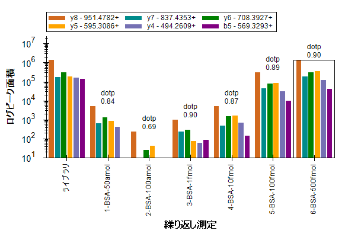
この表示では、50 amolの試料は100 amolの試料より10
fmolの試料によく一致しているよう
です。その他の4つのペプチドを確認すると、2つ（SLHTLFGDELCKおよびKVPQVSTPTLVEVSR）
では50 amolの試料の総ピークの強度は実際に10
fmolの試料の総ピークの強度より高くなっていますが、その他の2つについてはピークは小さくなっていることがわかります。明らかに、この試料の濃度は実際に50 amolではありません。反応が10 fmolと100
fmolとの間であった
2つのペプチドでは、実際の濃度がこれらの濃度の間の値であったように思われますが、その他の3つのペプチドを見るとそうではないようです。
またもう一つ確認すべきことは、試料がラベルした番号順 (1、2、3 … 6)で実際に測定されたかどうかです。これを確認するには、以下の操作を行います。
グラフに変化は見られません。 すなわち、試料は表示されている次数で実際に取得されたということです。このような反応曲線は通常、最低濃度から最高濃度へと取得され、キャリーオーバーの影響を低減します。
Skylineを利用することで、濃度曲線データの質を非常に素早く考察することができます。
最後の検証ステップとして、MS1フィルタプリカーサーピークも同様であるかどうかを見てみましょう。MS1ピークを表示するには、以下の操作を行います。
クロマトグラムは以下のようになります。
|
K.LVNELTEFAK.T (500 fmol) 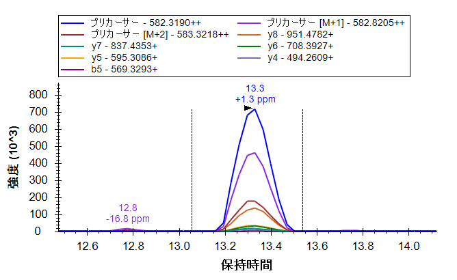 |
以前と同じように、最高強度のプロダクトイオン(y8)はモノアイソトピックプリカーサー強度の約1/5（1.4 x 105 v. 7.2 x 105）に達しており、M+2ピークでもy8ピークより強度が高くなっています。
プリカーサーピークのみを表示するには、以下の操作を行います。
これによりSkylineは以下のようになります。
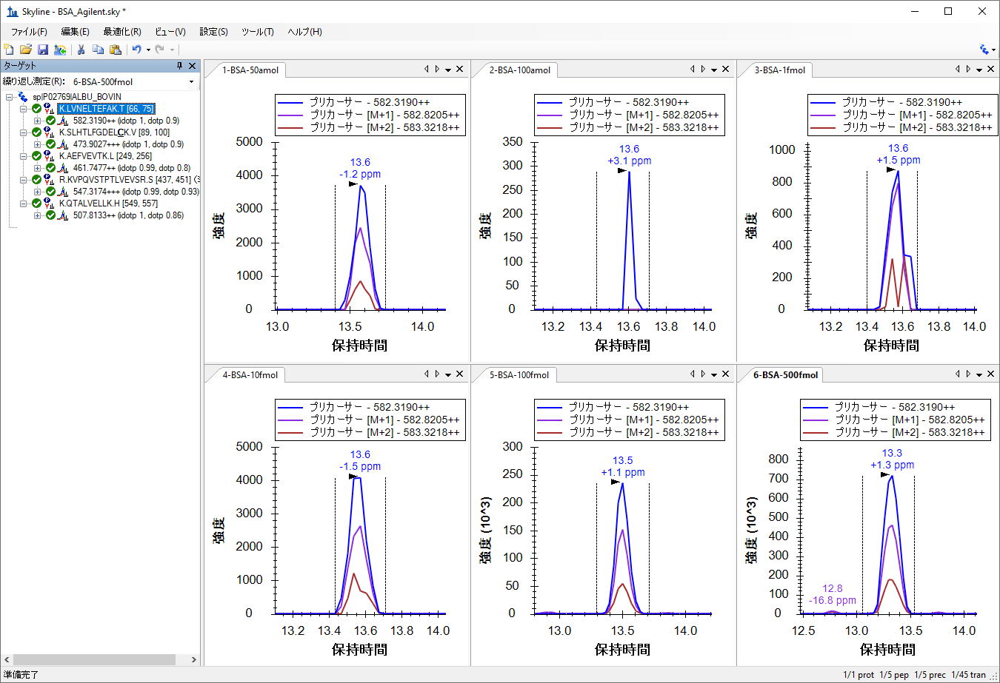
[ ピーク面積 ] グラフは以下のようになります。
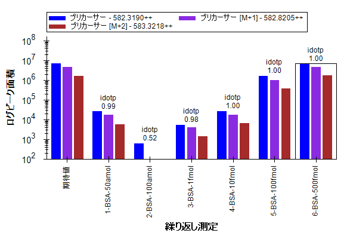
5つのペプチドをそれぞれもう一度確認すると、濃度ポイントの相対強度はプロダクトイオンでの比較で見られたものと非常に似ていることがわかります。
本チュートリアルでは、PRM実験実施用にSkylineドキュメントを設定する方法を習得しました。これにより、SRMのような実験をイオントラップやQ-TOF（およびQ-Orbitrap）装置といったフルスキャン装置で実施できるようになります。また通常のシステム適合性試験、品質管理試験、診断試験向けに、フルスキャン装置でこの技術を利用することも可能です。PRMメソッドをエクスポートする方法（現在はThermo、SCIEX、Burkerで利用可能）、そしてSkylineレポートを使用してメソッドエクスポートを現在サポートしていない装置のターゲットプリカーサーm/z値のリストを取得する方法も学びました。（注：SkylineはAgilent、SCIEX、Thermo、Waters装置用のPRM単離リストをエクスポートできるようになりました。）また、生データファイルをインポートする方法、およびこれらのファイルに含まれる可能性のあるMS1スキャンからクロマトグラムを抽出する方法についても学びました。インポートが完了すると、含まれるMS1スキャンのirankやidotpといった新しい注釈が表示されるようになるため、MS1スキャンまたはMS/MSスキャンいずれかからの情報のみ表示する選択が可能です。その他にも、Skylineがデータを理解しやすくするために提供しているクロマトグラム、要約グラフ、レポートについては三連四重極SRMの実験またはチュートリアルを参照してみてください。
1. Stacy D. Sherrod et al. Label-Free Quantitation of Protein Modifications by Pseudo-Selected Reaction Monitoring with Internal Reference Peptides. J. Proteome Res. (submitted)
2. Schilling, B. et al. Platform Independent and Label-Free Quantitation of Proteomic Data Using MS1 Extracted Ion Chromatograms in Skyline. Application to Protein Acetylation and Phosphorylation. Mol Cell Proteomics (2012).doi:10.1074/mcp.M112.017707